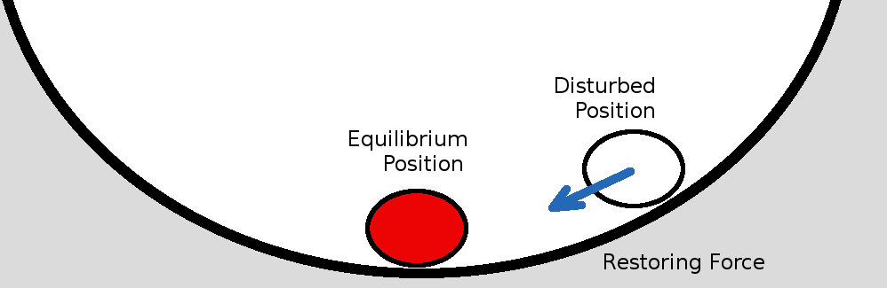
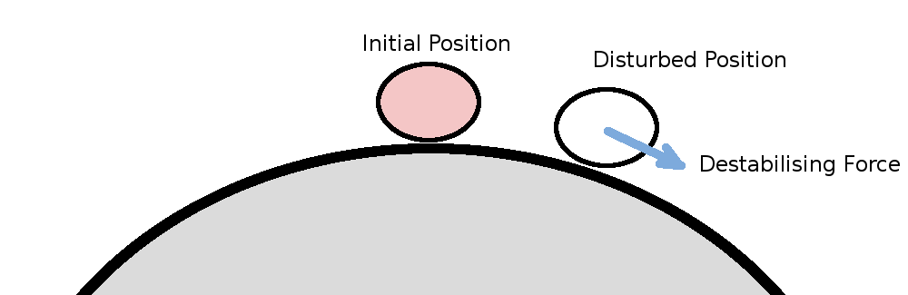
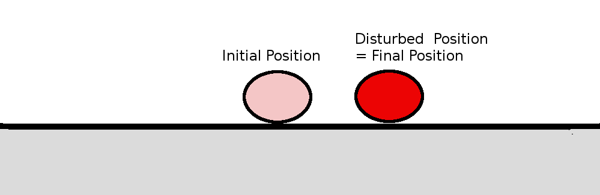

Stability of Longitudinal Motion
The stability of an aircraft in level flight can be considered for two cases of response to a disturbance. The first is static stability. If the aircraft is disturbed from its trimmed flight condition, then if the forces attempt to restore it back to the trimmed state, the aircraft will be statically stable. If however after a disturbance the forces continue to move the vehicle away from its trimmed state then it will be unstable. A simple example of stability is obtained by observing the behaviour of a ball on curved or flat surfaces. In the concave case, gravity restores the ball to its initial, equilibrium, position so this is a statically stable situation. In the convex case the disturbed ball will continue away from the initial position so it is an unstable situation. For a ball on a flat surface, a disturbance will move the ball to a new position but as no forces apply it will simply retain the new position.
|  Stable |  Unstable |  Neutral Stability |
Static Longitudinal Stability
For an aircraft, static stability will mostly depend on the signs and magnitudes of the aerodynamic derivatives that produce the forcing functions for the equations of motion. In most cases the moment derivatives due to a pitch or angle of attack change, eg. $M_q$, $M_w$, etc. will have the most contribution to the behaviour and will determine the static stability. For an aircraft with a standard tailplane configuration, these derivatives are large and negative.
By carrying out a weight and balance calculation to ensure the center of gravity is ahead of the aircraft's neutral point, static longitudinal stability is generally assured. The steps for these calculations are shown in the previous Aircraft Performance section, Weight and Balance Requirements. However, as there are two translational equations governing the motion as well as the pitching moment equation, there may be other positions in the flight envelope where static instability can occur. One other obvious situation is where the vehicle is attempting level flight below minimum drag speed.(see Aircraft Perfomance section: Drag and Drag Coefficient). If the aircraft slows slightly then the drag becomes greater and it will slow down further. This becomes a statically unstable situation for forward speed.Dynamic Longitudinal Stability
A second, more important consideration is the dynamic stability of the vehicle. As there are three coupled state variables, the final time dependent motion may be erratic. Even though the force derivatives are initially restoring toward the initial position after a disturbance, the coupled motion may cause interactions which lead to overshoots and eventual instability.
The dynamic motion of the aircraft can be found by time integration of the equations of motion after a force perturbation has been applied. However, the basic stability of the aircraft by looking at the free response to any type of disturbance. This is done by assuming that once a disturbance has occured the motion will be oscillatory and thus the equations can be solved in the frequency domain.
If the aircraft motion is harmonic then the longitudinal perturbation state variables can be defined as,
$$u=u↖{\^}e^{λt}\text" , "w=w↖{\^}e^{λt}\text" , "θ=θ↖{\^}e^{λt}$$
where $u↖{\^}$, $w↖{\^}$ and $θ↖{\^}$ are the peak amplitudes of the motion and λ is the complex frequency
Note: The peak amplitudes can be complex values to allow for magnitude and phase variation, ie. $u↖{\^}=u_R + i u_I$. Also $λ=σ + iω$, a complex value, where $σ$ is the damping or expanding of the moption and $ω$ is the real frequency of the motion.
The time derivative, rates of change of these state variables will be
$$u↖{.}=λu↖{\^}e^{λt}\text" , "w↖{.}=λw↖{\^}e^{λt}\text" , "θ↖{.}=q=λθ↖{\^}e^{λt}\text" , "θ↖{..}=q↖{.}=λ^2θ↖{\^}e^{λt}$$
Substituting these harmonic variables into the longitudinal perturbation equations gives,
$$u↖{\^}e^{λt}(λ-X_u)+w↖{\^}e^{λt}(-X_w-λX_{w↖{.}})+θ↖{\^}e^{λt}(g+λw_1-λX_q)=X_{δ_e}δ_e$$
$$u↖{\^}e^{λt}(-Z_u)+w↖{\^}e^{λt}(λ-Z_w-λZ_{w↖{.}})+θ↖{\^}e^{λt}(-λu_1+g\sin(θ_1)-λZ_q)=Z_{δ_e}δ_e$$
$$u↖{\^}e^{λt}(-M_u)+w↖{\^}e^{λt}(-M_w-λM_{w↖{.}})+θ↖{\^}e^{λt}(λ^2-λM_q)=M_{δ_e}δ_e$$
If we are considering the free response of this system of equations for any disturbance then the perturbation control deflections can be set to zero. Also the system can be simplified, without control inputs, by choosing a body axis which aligns with the wind axes. Thus $θ_1=0$, $\sin(θ_1)=0$, $w_1=0$ and $u_1=U$, the aircraft's true airspeed. In this frame of reference higher order aerodynamic derivatives due to vertical flow tend to be neglegible except in the pitching moment case, so $X_{w↖{.}}≈0$ and $Z_{w↖{.}}≈0$
Thus
$$u↖{\^}e^{λt}(λ-X_u)+w↖{\^}e^{λt}(-X_w)+θ↖{\^}e^{λt}(g-λX_q)=0$$
$$u↖{\^}e^{λt}(-Z_u)+w↖{\^}e^{λt}(λ-Z_w)+θ↖{\^}e^{λt}(-λU-λZ_q)=0$$
$$u↖{\^}e^{λt}(-M_u)+w↖{\^}e^{λt}(-M_w-λM_{w↖{.}})+θ↖{\^}e^{λt}(λ^2-λM_q)=0$$
This system can be written in matrix format,
| [ ($λ - X_u$) | ($-X_w$) | ($g-λX_q$) ] | { $u↖{\^}e^{λt}$ } | { $0$ } | |
| [ ($-Z_u$) | ($λ-Z_w$) | ($-λU-λZ_q$) ] | { $w↖{\^}e^{λt}$ } | = | { $0$ } |
| [ ($-M_u$) | ($-M_w-λM_w$) | ($λ^2-λM_q$) ] | { $θ↖{\^}e^{λt}$ } | { $0$ } |
Two solutions are possible for this system. The first is the trivial undisturbed response of $u↖{\^}=w↖{\^}=θ↖{\^}=0$. The second is the natural frequency and damping response of the system to any disturbance, the determinant of the system matrix is zero, $| [.] |=0$.
The determinant of the matrix can be written as,
| | ($λ - X_u$) | ($-X_w$) | ($g-λX_q$) | | ||
| | ($-Z_u$) | ($λ-Z_w$) | ($-λU-λZ_q$) | | = | $λ^4+p_3λ^3+p_2λ^2+p_1λ+ p_0$ |
| | ($-M_u$) | ($-M_w-λM_w$) | ($λ^2-λM_q$) | |
where the coefficents for the powers of λ are
$$p_3=(-M_q-Z_w-X_u-M_{w↖{.}}U-M_{w↖{.}}Z_q))$$
$$p_2=(Z_wM_q-UM_w-Z_qM_w+M_qX_u+Z_wX_u+UM_{w↖{.}}X_u+Z_qM_{w↖{.}}X_u-Z_uX_w-Z_uM_{w↖{.}}X_q-M_uX_q)$$
$$p_1=(-Z_wM_qX_u+UM_wX_u+Z_qM_wX_u+Z_uM_qX_w-UM_uX_w-M_uZ_qX_w+gZ_uM_{w↖{.}}+gM_u-Z_uM_wX_q+M_uZ_wX_q)$$
$$p_0=(gZ_uM_w-gM_uZ_w)$$
The solution of this quartic equation for $λ$ will produce 4 roots which are typically complex pairs.
$$λ=[{\table σ_1 + iω_1, σ_1-iω_1, σ_2+iω_2, σ_2-iω_2}]$$
For a stable aircraft $σ_1$ and $σ_2$ will be negative, indicating damped motion and the frequencies $ω_1$ and $ω_2$ will indicate the rate of oscillary motion. Typically, $σ_1≪σ_2$ and $ω_1<ω_2$ so that the first mode of motion is labelled short period and the second mode phugoid. A typical solution for a medium sized twin engine aircraft is seen in the following figure,
Figure 1. Free response longitudinal modes of motion for a transport aircraft
Short Period Mode
The longitudinal short period mode is predominantly a quick moment equation response to a disturbance in vertical velocity, $w$ and $q$. As $w$ directly affects any change in angle of attack, $Δα≈w/U$, then the large adverse moments created by the wing and the tailplane will quickly attempt to restore the vehicle to its original trimmed condition, where pitching moment equals zero. There is also a contribution from pitch rate, $q$, as this will generate restoring moments due to the tail plane. In many cases the response has zero frequency and results in a highly damped motion. Otherwise the period is usually no more than a second or two. Where the period becomes long enough to be felt by a pilot then handling quatities may be affected as the rapid motion may induce a pilot to attempt a correction and this can lead to pilot induced oscillations.Phugoid Mode
Phugoid mode is primarily an interaction between forward speed, $u$, and pitch attitude, $θ$ and is an interaction of the two translational equations of motion.A pitch perturbation, $θ$ will lead to a small increase in angle of attack, $α$ and thus a slight excess in lift causing the aircraft to climb. There will be an associated small increase in drag so forward speed, $U$ will decrease. An aircraft that is statically stable will produce a negative pitching moment due to the disturbance and hence the disturbance angle, $θ$ is reduced over time. Due to the pitch inertia of the vehicle the reducing $θ$ will overshoot. Once $θ<0$ the lift and drag will be reduced and so the aircraft will then start to descend and increase speed. As the pitch starts to increase again, the descent is halted and the aircraft starts to climb again.
This cycle of climbing/slowing then descending/accelerating will continue until damped out. The period is usually quite long, anywhere between 15 and 100 seconds and the damping rate is quite small. In some cases $σ>0$ and the motion will continue to grow over time, however as the period of this phugoid motion is relatively long, it is possible for the pilot or an autopilot to still maintain control of the aircraft.